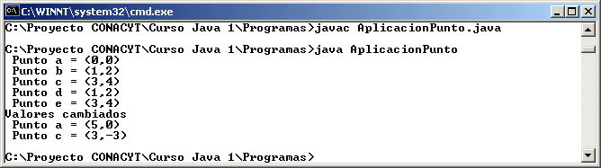

Módulo 3:
Métodos 
3. Sobreescritura (Redefinición) de un Método
El encabezado o firma de un método (la primera línea en el) nos dice que modificador tiene el método (publico, protegido, privado), su tipo de retorno (void o alguno de los tipos previamente vistos) y los parámetros que requiere para trabajar.
Pero ya que se define un método, éste puede definirse varias veces (sobreescribirse) en la misma clase, pero cambiando su encabezado de manera que sean otros los parámetros a utilizar, en C++ se pueden sobrecargar operadores, como el +, el - , etc., pero en Java no, en Java el operador + se puede utilizar para sumar numeros o para concatenar Strings solamente, la sobreescritura se puede realizar en métodos constructores o métodos no constructores..
Para ejemplificar la sobreescritura de métodos supongamos que tenemos alguna clase en la que se lleva el control del inventario de un artículo y puede ser que la cantidad que se reciba sea un entero, pero tambien pueda ser un número de doble precision, o un objeto tipo String, entonces podemos tener el mismo método definido tres veces:
public void cambia( int numero) {
inventario = numero;
}
public void cambia( double numero) {
inventario = (int) numero; // esto es la conversion de tipos usado tambien en C++
}
public void cambia( String numero) {
inventario = Integer.parseInt(numero); // asumiendo que inventario es entero
}
Cuando el método sea llamado, Java revisará cual es el método a utilizar dependiendo de la firma y el parámetro pasado.
Esto es muy utilizado tambien en los constructores de los objetos, por ejemplo pensemos en la clase Punto, en la que podemos contruir un objeto Punto a partir de dos valores enteros, pero supongamos que tambien quisieran ser construidos a través de dos valores de precisión doble (double) o que se quisiera construir un objeto a partir de otro objeto Punto, veamos como quedaria la clase Punto:
public class Punto {
private int x; // variable para la coordenada en x
private int y; // variable para la coordenada en y
public Punto() { // metodo para construir un objeto sin parámetros
x = 0;
y = 0;
}
public Punto(int x, int y) { // método para construir un objeto con parámetros enteros
this.x = x;
this.y = y;
}
public Punto(double x, double y) { // método para construir un objeto con parámetros double
this.x = (int) x;
this.y = (int) y;
}
public Punto(Punto obj) { // método para construir un objeto con parámetro objeto Punto
this.x = obj.x;
this.y = obj.y;
}
public int getX() { // método que te dá el valor de la coordenada x
return x;
}
public int getY() { // método que te dá el valor de la coordenada y
return y;
}
public void setX(int x) { // método que sirve para cambiar el valor de la coordenada x
this.x = x; // this se utiliza porque se esta utilizando (x) como parámetro y como
// variable de instancia y esto es para que no se confunda
}
public void setY(int y) { // método que te sirve para cambiar el valor de la coordenada y
this.y = y; // this se utiliza porque se esta utilizando (y) como parámetro y como
// variable de instancia y esto es para que no se confunda
}
}
En esta clase, ahora manejamos diferentes constructores para la clase, esto ya lo habiamos hecho antes, y es entonces que tambien los constructores se pueden definir de varias maneras. De la mimsa manera pudieramos redefinir algún o algunos métodos.
Supongamos que los valores de x o de y, sean tomados no solamente de enteros sino de valores tipo double, entonces tendriamos una clase como la siguiente:
public class Punto {
private int x; // variable para la coordenada en x
private int y; // variable para la coordenada en y
public Punto() { // metodo para construir un objeto sin parámetros
x = 0;
y = 0;
}
public Punto(int x, int y) { // método para construir un objeto con parámetros enteros
this.x = x;
this.y = y;
}
public Punto(double x, double y) { // método para construir un objeto con parámetros double
this.x = (int) x;
this.y = (int) y;
}
public Punto(Punto obj) { // método para construir un objeto con parámetro objeto Punto
this.x = obj.x;
this.y = obj.y;
}
public int getX() { // método que te dá el valor de la coordenada x
return x;
}
public int getY() { // método que te dá el valor de la coordenada y
return y;
}
public void setX(int x) { // método que sirve para cambiar el valor de la coordenada x
this.x = x; // this se utiliza porque se esta utilizando (x) como parámetro y como
// variable de instancia y esto es para que no se confunda
}
public void setX(double x) { // método que sirve para cambiar el valor de la coordenada x
this.x = (int) x; // con un valor double
}
public void setY(int y) { // método que te sirve para cambiar el valor de la coordenada y
this.y = y; // this se utiliza porque se esta utilizando (y) como parámetro y como
// variable de instancia y esto es para que no se confunda
}
public void setY(double y) { // método que te sirve para cambiar el valor de la coordenada y
this.y = (int) y; // con un valor double
}
public String toString() { // metodo para obtener el objeto en formato String
return "(" + getX() + "," + getY() + ")";
}
}
Una aplicación no gráfica que use esta clase para entender su manejo pudiera ser:
public class AplicacionPunto {
private static Punto a, b, c, d, e;
public static void main(String[] args) {
a = new Punto();
b = new Punto(1, 2);
c = new Punto(3.0, 4.0);
d = new Punto(b);
e = new Punto(c);
System.out.println(" Punto a = " + a.toString());
System.out.println(" Punto b = " + b.toString());
System.out.println(" Punto c = " + c.toString());
System.out.println(" Punto d = " + d.toString());
System.out.println(" Punto e = " + e.toString());
a.setX(5.0);
c.setY(-3.0);
System.out.println("Valores cambiados");
System.out.println(" Punto a = " + a.toString());
System.out.println(" Punto c = " + c.toString());
}
}
La forma en la que se puede visualizar esto es compilando como una aplicación no gráfica y ejecutándola, de la siguiente manera:

De esta manera observamos la manera de crear diferentes objetos de la clase Punto, y también observamos como es posible cambiar el valor de alguna de las variables de instancia de esos objetos utilizando un número de punto flotante en vez de un número entero.
Hemos hecho uso de una aplicación no gráfica para que se enfatice el uso de este concepto solamente.
Notarás que en la clase Punto utilizamos el método toString(), este método es muy utilizado en todas las clases Singulares, ya que es la manera de representar cualquier objeto de la clase en formato String.
2. Crea una aplicación no gráfica que cree varios objetos de la clase Cuenta reescrita en el punto anterior y que los despliegue en pantalla.
http://java.sun.com/docs/books/tutorial/java/javaOO/override.html